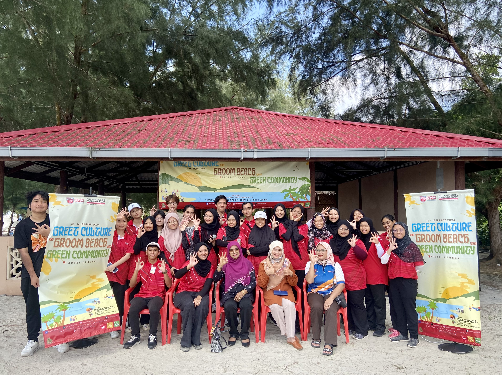
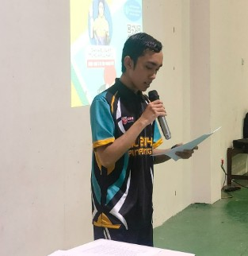
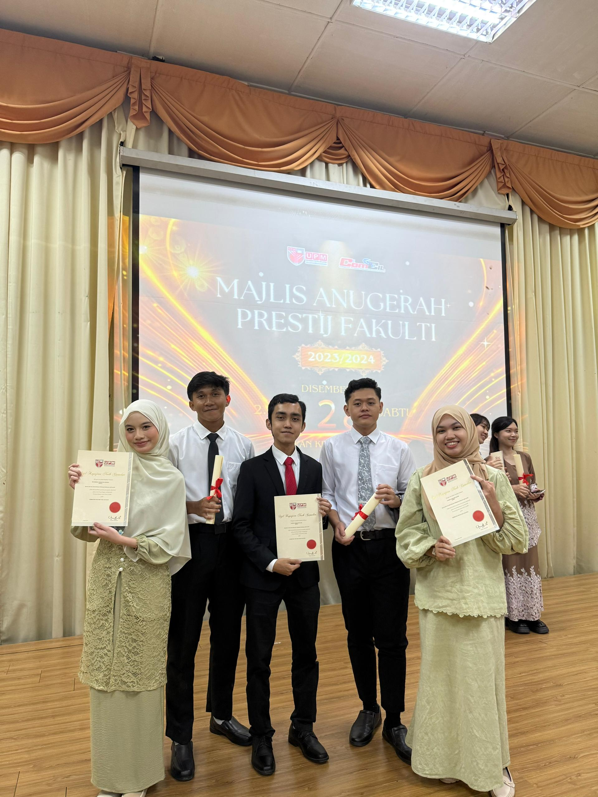

| Image | Activity Name | Description |
|---|---|---|
|  | Student Service Program | Under the course QKK2101 Bakti Siswa, my group went to Pantai Cunang, Selangor to perform various activities with the indigenous people residing there. With our program titled "Green Culture & Groom Beach with Green Community", we participated in various activities including beach cleaning, playing minigames with the children, and also conducting a soap making workshop by teaching the people how to produce soap from used oil. |
|  | Ping Pong Clinic | I organised a ping pong clinic as the program director for the course QKS2114 Ping Pong. This program invited children under the age of 12 from schools within close proximity to Serdang, Selangor, including SK Serdang and SK Seri Serdang. |
|  | Year 1 Award Ceremony | I attended the award ceremony for the Faculty of Computer Science and Information Technology. This is where i was awarded the Vice Chancellor Award for achieving a 4.000 GPA in two semesters. |